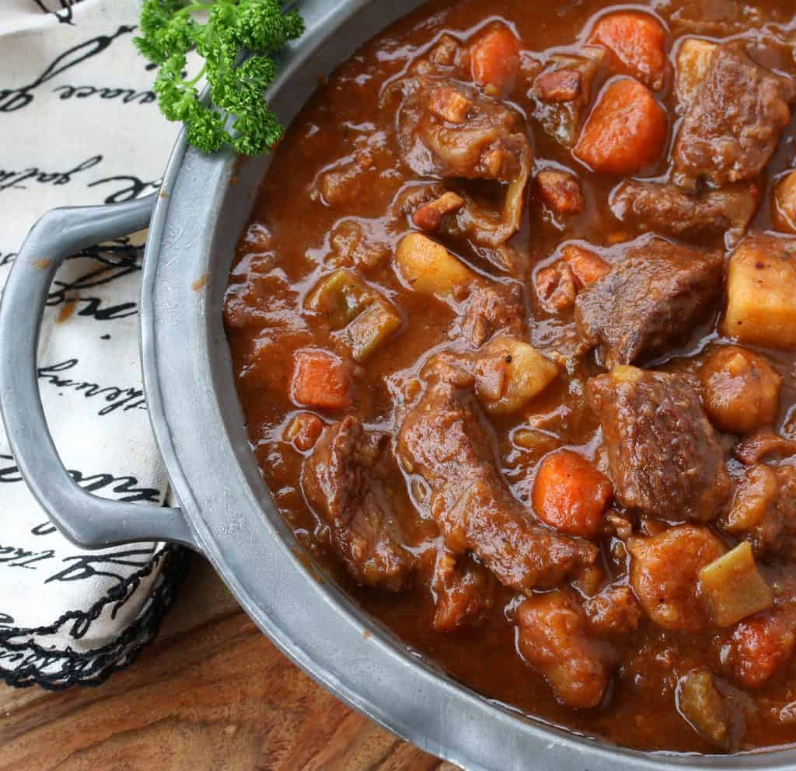

Irish Beef Guinness Stew
Photo and recipe from https://www.recipetineats.com/irish-beef-and-guinness-stew/

There's no greater comfort than a hearty stew. And Irish and Beef and
Guinness Stew might be the king of them all! Beer gives the sauce an
incredible rich, deep flavour, and the beef is fall-apart tender.
Ingredients
- 1.25 kg beef chuck
- 3 garlic cloves
- 2 onioins
- 3 tbsp flour
- 440ml Guinness Beer
- 4 tbsp tomato paste
- 3 cups chicken stock
- 3 carrots
- 2 large celery stalks
- 2 bay leaves
- 3 sprigs thyme
Instructions
- Cut the beef and sprinkle with salt and pepper.
- Heat oil and brown beef before removing from pot.
- Cook garlic and onion for 3 minutes.
- Stir through carrot and celery.
- Add flour and stir for 1 minute.
- Add Guinness, chicken stock, and tomato paste.
- Add bay leaves and thyme.
- Return beef and juices to pot.
- Cover and leave to gently bubble for 2 hours.
- Remove bay leaves and thyme.
- Serve with creamy mashed potatoes!
Go back to main page